Neural networks can be built up by connecting various layers together. There a six main types of layers, these are Input Layers, Input Layer Switches, Neural Network Layers, Output Layer Swtiches, Output Layers and the Teacher Layer.
Input Layers : 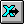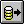
Input Switches : 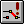 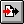
Neural Network Layers : 
 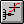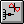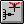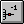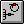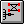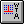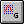
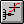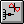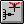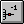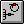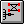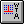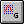
Output Layer Switches :
Output Layers : 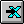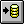
Teacher :
Layers can be connected to each other by clicking on the layer to connect from, showing a blue circle, and dragging a line from that circle to the layer to be connected to.
Not all types of layer can connect to all others. For example a file input layer cannot connect directly to a file output layer.
Making a connection connects all the rows of the first layer to all the rows of the second.
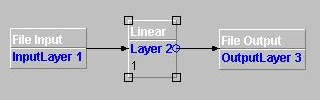
When a layer is selected, the user, pressing the mouse right button, can select the 'properties' item on the appearing popup menu, so a properties page displays, allowing the layer to be configured.
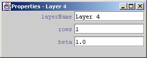
In the toolbar there are several buttons shown above, representing two main types of layer, these are supervised layers and unsupervised.
Note : Users should not mix, unsupervised and supervised network elements. Doing so will result in unspecified behaviour and your network will be useless. On the other hand you may first train an unsupervised network and embed it into the start of supervised i.e behind the supervised components. You can do this by exporting the unsupervised network after training and loading it into a Nested ANN component. This component must be placed before any supervised components i.e immediately after the input synapse.
Some input synapses are derived from a basic object called a stream input synapse. These input synapses have several common properties that can be specified. The following synapses are stream input synapses ...
File Input
URL Input
Excel Input
JDBC Input
YahooFinance Input
These synapses have the following common properties ...
Advanced Column Selector The
advanced column selector specifies what columns from the input source
should be presented the next layer. For example if a file input
contained 4 columns you could specify that columns 1 and 3 be presented
to the next layer. The selector must be list of one or a comma
delimeted list of multiple options. The options can be one column '2'
or a range of columns '3-6'. The format for the selector is as follows
...
[col]{,[col]{,[col1-col2]}}
For example if the input source has 5 columns and you would like column
1 and columns 3,4,5 you could specify the selector as '1,2-5' or
'1,2,3,4,5'.
Name The name of the layer as displayed on the development pane.
LastCol This property has been deprecated in this release. Ensure you now use the Advanced Column Selector instead. The last column of data that contains useful information. Default of zero uses all cloumns.
Buffered Determines whether the data should be buffered in memory rather than being read throughout the run.
FirstRow The first row of the file that contains useful information.
LastRow
The last row of the file that contains useful information. Default of
zero uses all rows.
Enabled The component is working only when this property is true.
StepCounter Input layers affect the running of the network. By default, each time a line is read from an input layer, the network monitor advances one step in the learning process. If there are several input layers, only one should have the step couter enabled.
MaxBufSize
Indicates the max buffer's size used to store the input patterns. If
equal to 0 (the default), the buffer size is set to 1MB (augment it
only if your input data source exceeds such size). Used only if
'Buffered' = true, otherwise it is ignored.
This tool allows a new file input layer to be added to the development pane. A file input synapse allows data to be presented to the network from a file. The file must contain columns of integer or real values delimeted by a semi colon. E.g for the xor problem the file should contain...
0;0;0
1;0;1
0;1;1
1;1;0
There extra property that can be set for file input layers:
FileName
The name of the file containing the data. E.g.
c:\data\myFile.txt
This tool allows a new URL input layer to be added to the development pane.
There extra property that should be set for URL input layers:
URL
The name of the Unified Resource Locator containing the data.
E.g. http//www.demoUrl.org
The Excel Input layer permits data from an Excel file to be applied to a neural network for processing.
The extra properties that can be specified for Excel input layers:
fileName
The parameter allows the name of the sheet to be chosen from
which the input data is read.
Sheet
The parameter allows the name of the sheet to be chosen from
which the input data is read.
The JDBC Input layer permits data from almost any database to be applied to a neural network for processing.
The JDBCInputSynapse provides support for data extraction from a database. To use this synapse you should ensure that the required JDBC Type 4 Driver is in the class path. It is possible to use other JDBC driver types though you will have to refer to the vendors documentation, it may require extra software insallation and this may limit your distributtion to certain Operating Systems.
The extra properties that can be specified for JDBC input layers:
driverName
The name of the database driver. For exmaple if you were using
the JdbcOdbc driver provided by sun and already present in the java
distribution then 'sun.jdbc.odbc.JdbcOdbcDriver'
dbURL
The database specification. This protocol is specific to the
driver, you must check the protocol with the driver vendor. For example
for the JdbcOdbc bridge
'jdbc:mysql://localhost/MyDb?user=myuser&password=mypass'
SQLQuery
The query that you will use to extract information from the
database. For example 'select val1,val2,result from xortable;'
Some commonly used Driver protocols are shown below ...
Driver {com.mysql.jdbc.Driver}
Protocol {jdbc:mysql://[hostname][,failoverhost...][:port]/[dbname][?param1=value1][¶m2=value2].....} MySQL Protocol
Example {jdbc:mysql://localhost/test?user=blah&password=blah}
Web Site {http://www.mysql.com}
Driver {sun.jdbc.odbc.JdbcOdbcDriver}
Protocol { jdbc:odbc:[;=]* } ODBC Protocol
Example {jdbc:odbc:mydb;UID=me;PWD=secret}
Web Site {http://www.java.sun.com}
Any fields selected from a database should contain a single double or float format value. The data type is not so important it can be text or a number field so long as it contains just one double or float format value.
E.g Correct = '2.31' Wrong= '3.45;1.21' and Wrong = 'hello'
The Yahoo Finance Input Synapse provides support for financial data input from financial markets. The synapse contacts Yahoo Finance services and downloads historical data for the chosen symbol and date range. Finally the data is presented to the network in reverse date order i.e oldest first.
The following properties must be provided to this synapse...
Symbol
This is the symbol of the specific stock e.g TSCO.L for UK super market company Tesco's. This must be one of symbols defined by Yahoo.
firstDate
This is the date of the oldest requested stock value. Note the dates should be in the following format YYYY.MM.DD where YYYY=4 Character yeat, MM=2 character month, DD=2 character day of the month.
lastDate
This is the date of the latest requested stock value. This uses the same format as First Date above.
Period
This is the period between stock values obtained from Yahoo, 'Daily' will obtain stock values recorded at the end of each day, 'Monthly' will obtain stock values recorded at the beginning of each month, 'Yearly' will obtain stock values recorded at the start of each year.
This synapse provides the following info ..
Open as column 1
High as column 2
Low as column 3
Close as column 4.
Volume as column 5.
Adj close as column 6
For the particular stock symbol. You must set the Advanced Column
Selector (ACS) according to this values. If you want to use as input
the Open, High and the Volume columns, hence you must write '1-2,5'
into the ACS.
Note the stock symbol must be one of the symbols
defined by Yahoo. For a list of symbols see the Finance section of
the Yahoo web site www.yahoo.co.uk.
The InputConnector
permits to share the
same input synapse for several uses, as for training and validating a
neural network.
When we need to train a network, we need to use at least two input data sources, one as training input data and another as desired data. If we add also another data source to validate the network, then we need to add other two data sources to our neural network. All those input synapses make the architecture of the neural network very complex, and, if they are buffered, a huge amount of memory is needed in order to store all the implied data.
In order to resolve the above problems, we have built a new input component named InputConnector. It permits to share the same input synapses for several uses, as depicted in the following figure:To use it, simply
connect the Input Synapse to the needed Input
Connector(s), set their properties, and then attach each Input
Connector to the corresponding neural network's layer, as for any other
input synapse.
The InputConnectors are into the two red boxes, in the above figure.
As you can see, thanks to the InputConnector components, we have used only one input data source (the Excel Input component), and only one NormalizerPlugin, simplifying, in this manner, the entire architecture of the neural network.
The four InputConnectors are used to read from the Excel sheet, respectively:
The input data for the training phase (InputTraining connector)
The input data for the validation phase (InputValidation connector)
The desired data for the training phase (DesiredTraining component)
The desired data for the validation phase (DesiredValidation component)
Here are the
properties the
InputConnector exposes:
The switch input allows the choice of which input component is to
be connected to the neural network, choosing between all the input
components attached to it.
The user, after having attached
several input components to its input, can set the active input
parameter with the name of the chosen component that is to be
connected to the net. The default input parameter must be
filled with the name of the default component (which one activated
when the user selects the Control->Reset Input Streams menu item).
This component, along with the output switch layer, permits
dynamic changing of the architecture of the neural network, changing
the input and/or output data layers attached to the neural network at
any time. This is useful to switch the input source, for instance,
between the file containing the training data set and the file
containing the validation data set to test the training of the neural
network, as depicted in the following screen shot:
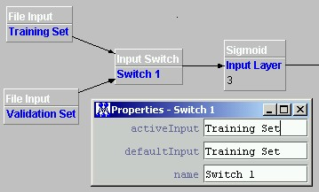
The learning switch is a special implementation of the above
switch input component. This component can be used to attach to the
neural net both the training data set and the validation data set. In
this manner the user can test the generalization property of a neural
network using a different data set never seen during the training
phase.
The training input data set can be attached dragging an
arrow from the input component to the learning switch, while the
validation input data set can be attached simply by dragging an arrow
from the red square on top of the learning switch to the input
component containing the validation data set.
To switch between
them, simply we can change the value of the 'validation' parameter
shown in the Control Panel.
The 'validation' parameter, other
than to switch between the two input sources, will set the number of
input patterns read: when it is 'false', the neural network will read
a number of patterns equal to the trainingPatterns parameter,
whereas, when it is 'false', a number of patterns equal to
validationPatterns will be read from the active input source.
Both these above parameters must be obtained from the following
formula: lastRow - firstRow + 1
where the last/firstRow
variables contain the values of the corrisponding parameters of the
attached input components.
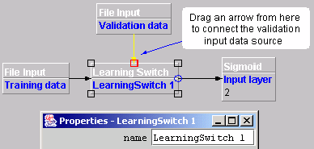
Warning: Because we will have a validation data set for the desired data too, this component must be inserted both before the input layer of the neural network, and between the Teacher layer and the desired input data sets.
This tool allows a new linear processing layer to be added to the development pane.
There are three properties that can be set for linear layers:
Layer Name
The name of the layer as displayed on the development pane.
Rows
The number of neurons in the layer.
Beta
The amount the sum of the inputs is scaled by. The output of a neuron
is the sum of the inputs multiplied by beta.
This tool allows a new sigmoid processing layer to be added to the development pane.
There are two properties that can be set for sigmoid layers:
Layer Name
The name of the layer as displayed on the development pane.
Rows
The number of neurons in the layer.
This tool allows a new tanh processing layer to be added to the development pane.
There are two properties that can be set for tanh layers:
Layer Name
The name of the layer as displayed on the development pane.
Rows
The number of neurons in the layer.
This tool allows a new logarithmic processing layer to be added to the development pane.
There are two properties that can be set for tanh layers:
Layer Name
The name of the layer as displayed on the development pane.
Rows
The number of neurons in the layer.
The output
of a Sine Layer neuron is the sum of the weighted input values,
applied to a sine – sin(x) – transfer function. Neurons with sine
activation function might be useful in problems with periodicity.
Properties:
Layer Name
The name of the layer as displayed on the development pane.
Rows
The number of neurons in the layer.
This tool allows a new delay layer to be added to the development pane.
There are three properties that can be set for delay layers:
Layer Name
The name of the layer as displayed on the development pane.
Rows
The number of neurons in the layer.
Taps
The number of delay taps on each row. Each tap delays the output one
cycle, so for example setting taps to 2 would, for each row, make the
current value, the previous value and the value before that available.
This tool allows a new context processing layer to be added to the development pane.
There are two properties that can be set for context layers:
Layer Name
The name of the layer as displayed on the development pane.
Rows
The number of neurons in the layer.
Beta
The amount the sum of the inputs is scaled by. The output of a neuron is the sum of the inputs multiplied by beta.
timeConstant
The fixed weight of the recurrent connection (not learned)
The nested neural network permits a whole neural network to be
added to the NN. Using this component, it is possible to build
modular neural networks, constituted by several pre-built neural
networks, allowing complex compound ‘organisms’ to be created.
The parameter ‘Nested ANN’ must be filled with the name of a
serialized neural network (saved with the File->Export neural net
menu item).
Note: Remember that a neural network, to be
used in a nested ANN component, must be composed only of processing
elements, so remember to eliminate any file I/O and/or Teacher
layers.
A Winner Takes All layer is an unsupervised component. It can be used to build SOM networks that require a winner take all learning strategy. Ensure that the layers input synapse implements SOM weights such as the Kohonen Synapse. Failure to do so will result in unspecified behaviour.
The properties of this layer are ...
Layer Name
The name of this layer.
Width
The width if the SOM layer map.
Height
The height of the SOM layer map.
A Gaussian layer is an unsupervised component. It can be used to build SOM networks that require a guassian distributed learning strategy. Ensure that the layers input synapse implements SOM weights such as the Kohonen Synapse. Failure to do so will result in unspecified behaviour.
The properties of this layer are ...
Layer Name
The name of this layer.
Width
The width if the SOM layer map.
Height
The height of the SOM layer map.
ordering phase (epochs)
How long the layer distributes the learning strategy in a
gaussian manor.
TimeConstant
The time constant is used to decrease the size of the spatial
map.
The switch output permits the choice of which output component is
to be connected to the neural network, choosing it between all the
output components attached.
The user, after having attached
several components to its output, can set the active output
parameter with the name of the chosen component that is to be
connected to the net. The default output parameter must be
filled with the name of the default component (which one
activated when the user selects the Control->Reset Input Streams
menu item).
This tool allows a new file output layer to be added to the development pane.
There are four properties that can be set for file output layers:
IgnoreBefore
The number of rows to skip before writing output data. This allows
header rows to be preserved.
Name
The name of the layer as displayed on the development pane.
Enabled
Not used, for future development.
FileName
The name of the file to write to. E.g. c:\data\myOutFile.txt
The Excel output layer is used to write the results of a processing layer to an Excel formatted file. The filename parameter specifies the file that the results are to be written to. The sheet parameter allows the name of the sheet to be chosen, to which the input data is to be written.
The JDBC Output layer allows the neural network output data to be written to almost any database.
The JDBCOutputSynapse provides support for data output to a database. To use this synapse you should ensure that the required JDBC Type 4 Driver is in the class path. It is possible to use other JDBC driver types though you will have to refer to the vendors documentation, it may require extra software insallation and this may limit your distributtion to certain Operating Systems.
The extra properties that can be specified for JDBC output layers:
driverName
The name of the database driver. For exmaple if you were using
the JdbcOdbc driver provided by sun and already present in the java
distribution then 'sun.jdbc.odbc.JdbcOdbcDriver'
dbURL
The database specification. This protocol is specific to the
driver, you must check the protocol with the driver vendor. For example
for the JdbcOdbc bridge
'jdbc:mysql://localhost/MyDb?user=myuser&password=mypass'
SQLAmendment
The amendment that you will use to place information into the
database. Each output value can be referred to in the amendment string
using JOONE[X] where X is the Xth index of the required output value
and X=1 is the first output index. For example 'insert into
my_result_table (result1,result2) values ('JOONE[1]','JOONE[2]')'.
Some commonly used Driver protocols are shown below ...
Driver {com.mysql.jdbc.Driver}
Protocol {jdbc:mysql://[hostname][,failoverhost...][:port]/[dbname][?param1=value1][¶m2=value2].....} MySQL Protocol
Example {jdbc:mysql://localhost/test?user=blah&password=blah}
Web Site {http://www.mysql.com}
Driver {sun.jdbc.odbc.JdbcOdbcDriver}
Protocol { jdbc:odbc:[;=]* } ODBC Protocol
Example {jdbc:odbc:mydb;UID=me;PWD=secret}
Web Site {http://www.java.sun.com}
Data Types
Any fields used to store values in a database should be able to hold a single double value. The data type is not so important it can be text or a number field so long as it can hold one double value.
This tool allows a new teacher layer to be added to the development pane.
Teacher layers are connected differently to other layers. The teacher layer needs to be connected to the output of the network and also to the input that contains the desired results.
Connections from the output of the network to the teacher are made in the usual way.
Connections from the teacher to the desired input layer are made by selecting the teacher layer, displaying the red square, and drawing a yellow line from this to the input layer.
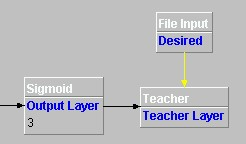
There is one property that can be set for teacher layers:
Name
The name of the layer as displayed on the development pane.